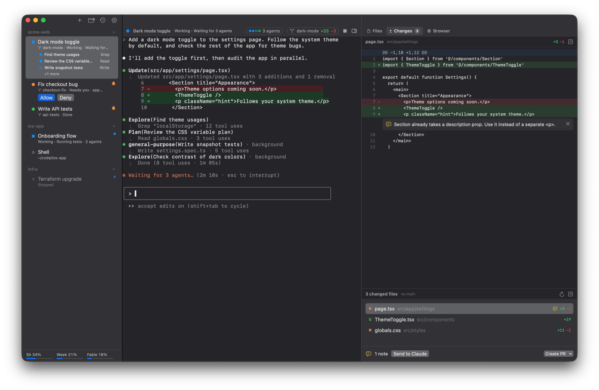

A cmux alternative built around Claude Code and Codex
cmux and omux want the same thing: a Mac terminal that makes running many coding agents bearable. Both are native Swift apps, both are free and open source, and both light up when an agent needs you.
They differ in what they're built around. cmux is a general terminal, rendered by libghostty, with workspaces, split panes, SSH, an in-app browser with an automation API, and a CLI and socket API that scripts can drive. omux is narrower on purpose: it's a session manager for Claude Code and Codex, and it reads their own signals to show status, permissions, subagents and usage limits.

Side by side
| omux | cmux | |
|---|---|---|
| Runs on | macOS | macOS |
| Built with | SwiftUI and SwiftTerm | Swift and AppKit on libghostty; reads your Ghostty config |
| Organizing work | Projects, each with sessions; optional worktree per session | Workspaces with vertical tabs showing branch, directory, ports and PR status |
| Agent needs attention | Status from Claude Code's and Codex's own protocols: working, needs you, done, and what it's doing | Notification rings and a notification panel, fed by OSC 9/99/777 and the cmux notify CLI |
| Answer a permission prompt | Allow and Deny buttons in the sidebar and header; Codex approvals show the command | Jump to the pane |
| Subagents | Listed per session with transcripts; Codex child agents too | Claude Code Teams mode, teammates as native splits |
| Conversations after a restart | Each session resumes its exact Claude or Codex conversation | Layout, directories and saved session ids restored; supported agents resume |
| Pull requests | PR status per worktree session, create, merge, clean up | PR status shown in the sidebar |
| Side panels | Files, Changes (diff with review notes sent to the agent) and Browser | In-app browser with a scriptable automation API |
| Usage limits | Claude and Codex plan limits in the sidebar | ✕ |
| Split panes | ✕ | ✓ right and down |
| Remote machines over SSH | ✕ | ✓ cmux ssh |
| Scripting | ✕ | CLI and Unix socket API |
| Updates | In-app, signed, notarized | In-app via Sparkle, DMG and Homebrew |
| License | MIT | GPL-3.0 for the app |
Pick cmux if
- You want split panes, SSH workspaces, or a terminal you can script from the outside.
- You already use Ghostty and want its rendering and config.
- You run agents beyond Claude Code and Codex and want them all treated the same way.
Pick omux if
- Your sessions are Claude Code and Codex, and you want status, permissions and subagents read from the agents themselves rather than from notifications.
- You want a worktree per session with the pull request's state, the diff and review notes right there.
- You like a smaller, MIT-licensed app with no scripting surface to think about.
What omux does for every session
- Projects with sessions under them, in a sidebar
- Shows whether each agent is working, needs you or is done
- Allow or Deny an agent's permission request without switching to it
- Lists a session's subagents and opens their transcripts
- Resumes each Claude Code and Codex conversation after a relaunch
- Git worktree per session, with pull request status and merge
- Files, Changes (diff with review notes) and Browser panels
- Claude and Codex plan usage limits in the sidebar
- macOS notifications with sound
Questions
Which is more mature?
cmux has a broader feature set and a larger community. omux is newer and focused; check both changelogs and pick the one whose direction matches how you work.
Can omux read Ghostty themes?
No. omux has its own themes and font settings. cmux reads your Ghostty configuration.
Does omux have a CLI?
Not beyond open -a omux <folder>. If you need to script your terminal, cmux is the better fit today.
Also compared: tmux, Warp, herdr. Facts about cmux come from its public documentation as of 2026-10-30; if something is out of date, open an issue.